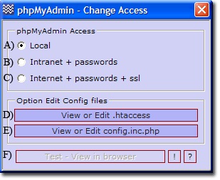

General - Introduction
This dropdown menu groups items that do not easily fit into other categories.
Change Apache and MySQL ports
UniController: Server Configuration > General > Change ports, Apache and MySQL
|
Change a Single port
- Current port setting is displayed.
- Change the port to required value.
- Click the corresponding change button.
Change all ports
- Change all ports to required value.
- Click change all button.
Note 1: For new ports to become effective you must restart the servers.
Note 2: For detailed information see Change Ports
Note 3: Normally you should run the multi-server script to change ports.
|

|
Clear server log files
UniController: Server Configuration > General > Clear Server log files
|
Clear a Single Log file
- Select the log file to delete (Tick check box).
- Click Clear Selected button.
Clear All log files
- Click Select All button.
- Click Clear Selected button.
Note 1: The current file size is displayed.
Note 2: To clear Apache and MySQL logs, you must first stop the servers.
Note 3: For detailed information see Clear Logs
|

|
Root folder www - Access
UniController: Server Configuration > General > Root www - Change passwords and access
|
This menu is split into three sections as follows:
- The top section allows you to change the access name and password; the defaults are set to root.
- Generally for a private server a single name and password are used.
- These are displayed and changeable using buttons A) B) D)
- Note: When using a list, only the first entry is displayed and directly changeable.
- Using a list of names and passwords requires that you directly edit the associated name-password configuration file. Use edit button E) to open the file in notepad. The Reload values button C) displays just the first entry in list.
- Change state: enables or disables the use of a password to access root folder www. Default is disabled.
- Access section: allows you to set who can gain access to root folder www. Default is local access only.
Note 1: Server access is controlled using an .htaccess file. This can be directly edited using Edit button K)
Note 2: Apache does not require restarting all changes take effect immediately.
Note 3: Test button L) opens the index page in the default browser allowing you to quickly test changes.
Note 4: For detailed information see Root folder www access
|

|
Root folder ssl - Access
UniController: Server Configuration > General > Root ssl - Change passwords and access
|
This menu is split into three sections as follows:
- The top section allows you to change the access name and password; the defaults are set to root.
- Generally for a private server a single name and password are used.
- These are displayed and changeable using buttons A) B) D)
- Note: When using a list, only the first entry is displayed and directly changeable.
- Using a list of names and passwords requires that you directly edit the associated name-password configuration file. Use edit button E) to open the file in notepad. The Reload values button C) displays just the first entry in list.
- Change state: enables or disables the use of a password to access root folder ssl. Default is disabled.
- Access section: allows you to set who can gain access to root folder ssl. Default is local access only.
Note 1: Server access is controlled using an .htaccess file. This can be directly edited using Edit button K)
Note 2: Apache does not require restarting. All changes take effect immediately.
Note 3: Test button L) opens the index page in the default browser allowing you to quickly test changes.
Note 4: For detailed information see Root folder ssl access
|

|
Root phpMyAdmin Access
UniController: Server Configuration > General > Root phpMyAdmin - Change Access
- A) Local access is the default and prevents both Intranet and Internet users access to phpMyAdmin. Only localhost may connect. It allows the root MySQL administrator direct access without the need to enter a name or password. For security reasons you must change the default MySQL password this prevents accidental cross-site scripting.
- B) Intranet + passwords. Anyone on your Intranet is allowed access to phpMyAdmin, however to gain access to the MySQL server requires a name and password. A user name and password are stored on the MySQL server for each restricted user created. A restricted user is one that is assigned access only to specific databases, and also has limited privileges for them.
- C) Internet + passwords +ssl This is similar to Intranet, except that all transactions are performed over a secure encrypted connection using ssl. If you have not installed or created a server certificate, clicking this radio button will produce a warning and the access selection will not change. This security feature forces you to use ssl and prevents sending names and passwords over the Internet in plain text.
- D) phpMyAdmin root folder is protected by an .htaccess file. This menu button opens this file in the default text editor allowing you to view or edit the file.
- E) phpMyAdmin is configured using the user configuration file config.inc.php. This menu button opens this file in the default text editor allowing you to view or edit the file.
- F) This menu button opens phpMyAdmin in the default browser. A greyed out button indicates that Apache is not running and its function are unavailable.
|

|
Note: For detailed information, see Root phpMyAdmin access
|